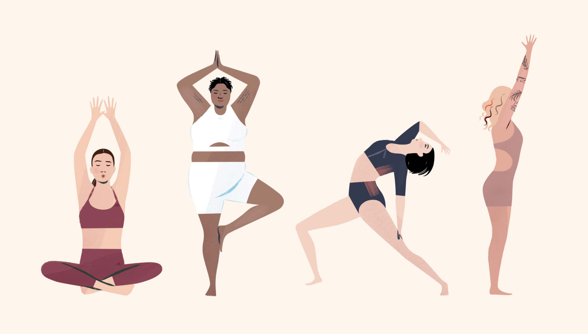

About Yoga
Yoga is a physical, mental, and spiritual practice or discipline which originated in ancient India. Yoga is one of the six classical schools of Indian philosophical traditions. There is a broad variety of yoga schools, practices, and goals in Hinduism, Buddhism, and Jainism.
Yoga is a group of physical, mental, and spiritual practices or disciplines which originated in ancient India. There is a broad variety of yoga schools, practices, and goals in Hinduism, Buddhism, and Jainism.
Benefits of yoga

The kind of student you are during your yoga teacher training will determine what kind of teacher you will become. I’ve said it before: Good yoga teachers first make sure they are the best yoga students they can possibly be. I bet you’re determined to do great in yoga teacher training because studying yoga excites you. But did you know teaching yoga and doing yoga are two completely different skill sets? They’re related but they’re not the same. Just because you do your poses well, that doesn’t guarantee you’ll be a good teacher. Here I’m sharing five great ways to prepare for your yoga teacher training. These tips are effective and efficient—and guaranteed to help you stand out once you begin your training.